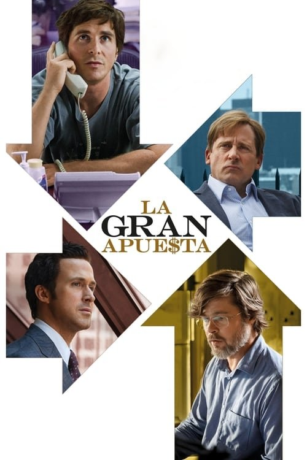

La gran apuesta (2015)
Sinopsis Rápida
Un grupo de inadaptados ve venir el colapso financiero de 2008 y apuesta en contra del sistema, arriesgando todo para ganar a lo grande. ¿Lograrán sobrevivir a la tormenta que ellos mismos ayudaron a crear?
Sinopsis Detallada
La gran apuesta narra la historia de un grupo de inversores que, desafiando las predicciones del mercado, anticipan la inminente crisis de las hipotecas subprime. La película sigue sus complejas estrategias y el riesgo personal que asumen, mostrando la codicia, la corrupción y la ignorancia que llevaron al colapso. Con un reparto estelar y una narrativa ágil, la película ofrece una mirada crítica al sistema financiero global y a las consecuencias devastadoras de sus fallas. La película, además, se caracteriza por su inteligente manejo de la información financiera y su mezcla de humor negro.
¿Por qué tenés que verla?
- Una explicación fascinante y accesible de una crisis financiera compleja.
- Las actuaciones estelares de Christian Bale, Steve Carell y Ryan Gosling.
- Su impacto como película que visibilizó las fallas del sistema financiero y generó debate.
- Una narrativa inteligente y ágil que mantiene el interés hasta el final.
Idea Extra
Comparación de la crisis de 2008 con las actuales tendencias económicas y financieras.
{{CONTENIDO_RELACIONADO}}